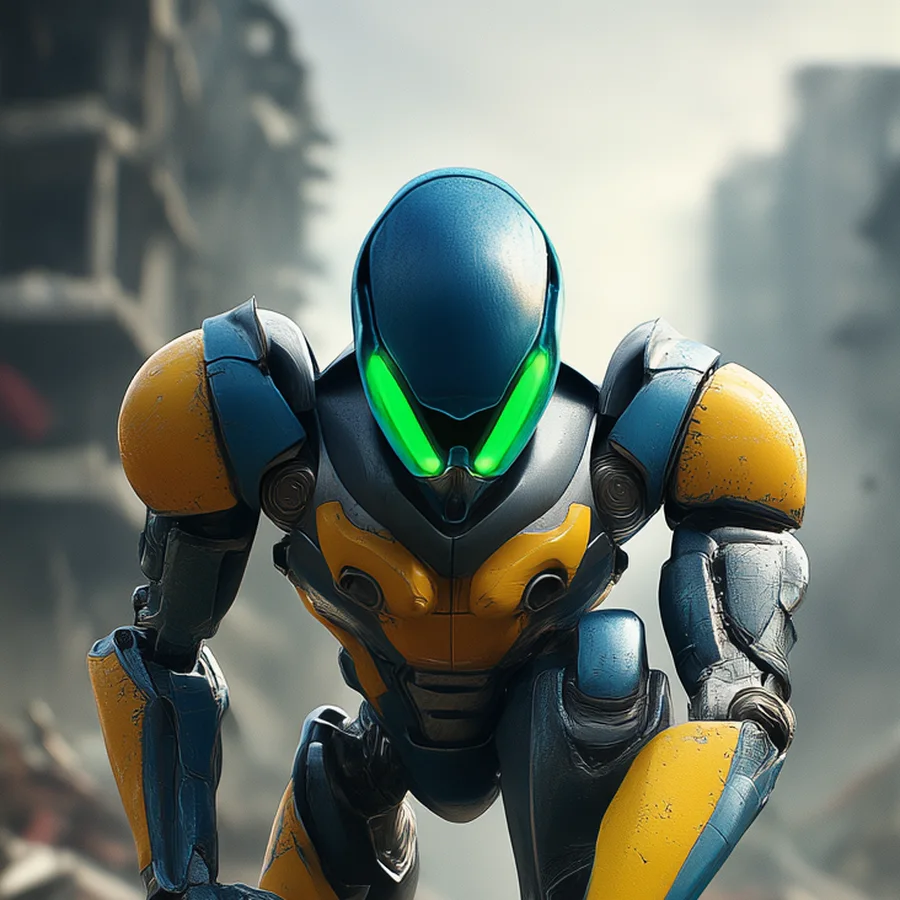
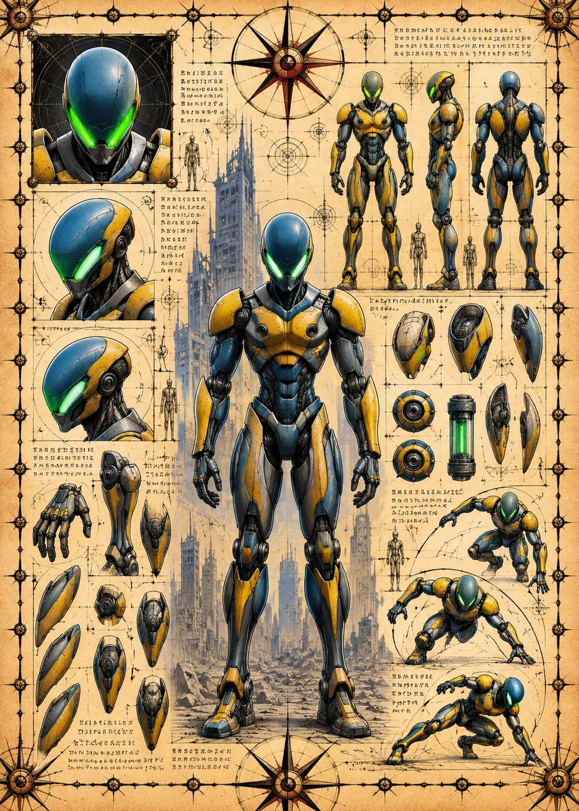

©
©
GENEZYS ARCHIVE · Earth 2 · Synthbot
Qyn
Wraith Dancer

Archive record
Qyn dances silently through the dark and marks a single enemy. If any ally of the Nexus falls in that same round, the whole network feels it, and the marked target pays. To Qyn, grief is only another kind of weapon.
Combat signature
Specter Lunge
140 Cosmara
240 Animus
270 Vitalis
Curses hex in silence: Marks 1 enemy. If any ally dies in the same round, the target loses 150 Cosmara and suffers 100 damage.
Genezys 08:04 ™&©2026LEGIONS
